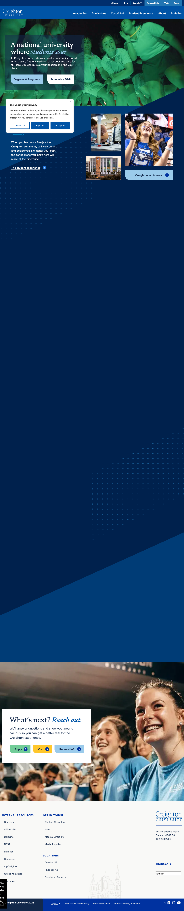
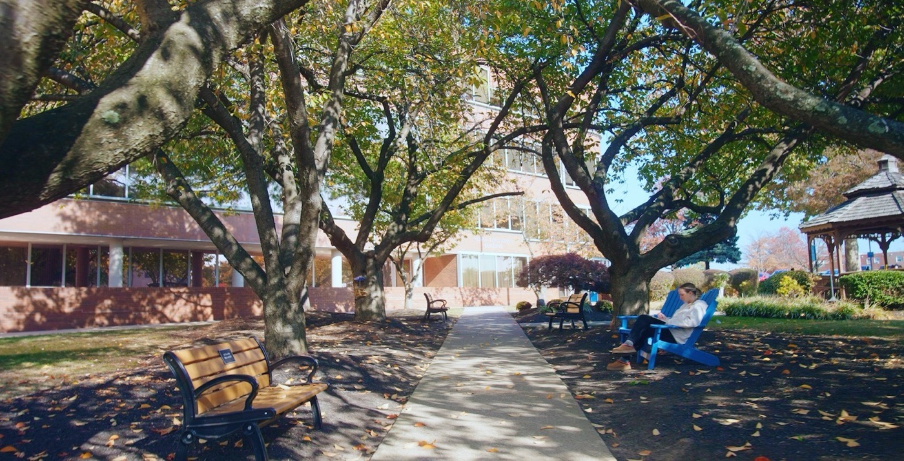
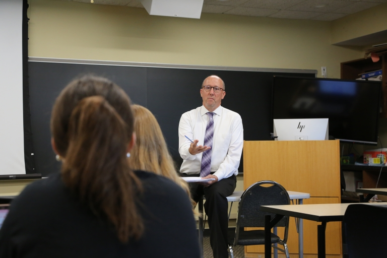
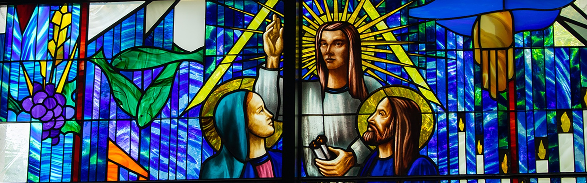
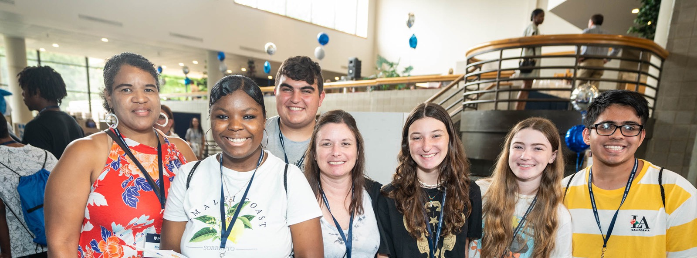

What we know.
The proposal stays tight because the research sits here. Strategic intelligence on the institution. Competitive positioning against peers bidding the same prospects. A full audit of the 1,601-URL sitemap. The technical approach, engineering spec, migration runbook, and execution playbook, end to end, for the team that will live with this site for the next five years. Every chapter is grounded in the same question: which of Holy Family's prospective adult and graduate students does this help become enrolled students faster?
Your real competitors for the same student.




Bulletproof research.
Six parallel research passes compiled into one brief. Slate integration patterns, higher-ed chatbots, AI search, enrollment conversion benchmarks, personalization tiers, AEO/GEO, WCAG 2.2, and the competitive pricing landscape. The source of truth for most proposal claims.
Prospect intelligence.
Financial health (S&P A−, $96.4M revenue, $30M endowment), academic profile, the six cabinet members evaluating this proposal, pain points, opening points, and an honest go/no-go recommendation.


Competitive positioning.
Structural disadvantages of the five likely competing agencies (OHO Interactive, Promet Source, Kanopi Studios, Electric Citizen, and regional Philly shops), and how we fit differently.

Sitemap audit.
Full scrape of holyfamily.edu: 1,601 URLs, 670 news articles (41.8% of the site), 180+ distinct top-level prefixes, 20+ duplicate RFI forms. The foundation for the proposed information-architecture collapse to eight sections.
WordPress build architecture.
The engineering spec. Custom block theme, ACF field groups, plugin ecosystem, Pantheon deployment workflow, performance budgets, security posture. Every technical decision in the proposal traces back here.

Drupal → WordPress, AI-accelerated.
End-to-end migration runbook for 1,601 URLs. FG Drupal to WordPress Premium, WP All Import, sentence-transformer semantic redirect mapping, AI content classification, post-migration QA automation.
Technical approach.
The RFP Section C draft. CMS recommendation, component-based theme, Pantheon workflow, WCAG 2.2 AA shift-left methodology, Slate integration architecture, and the post-launch ownership principle that governs every other decision.

Execution guide.
A 5-phase pipeline (extract, transform, scaffold, test, deploy) with CLI flows, pseudocode, rate-limiting patterns, image deduplication, redirect mapping, and a pragmatic 3-to-5-week timeline. The work behind the work.